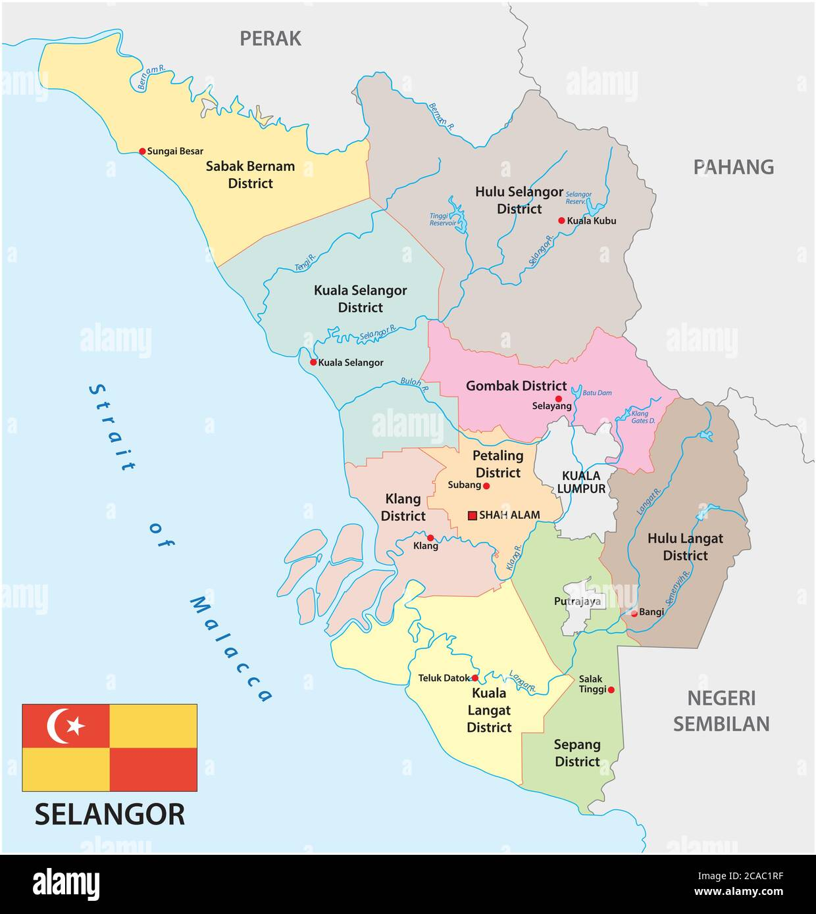

Hi. My name is Nabil Al-Hadif bin Zakaria and I am 20 years old. I was born on 25th January 2004 at Hospital Tengku Ampuan Rahimah (htar), Klang. I have three siblings which is I am the middle child in my family. I live with my parents and my siblings in Shah Alam, Selangor.
I like to play football since I was kid. I really enjoy playing football because it’s an exciting and dynamic sport that keeps me active and engaged. The feeling of running down the field, trying to control the ball, and working with teammates to score a goal is always thrilling. Whether I’m playing casually with friends or in a more competitive setting, football always brings a sense of camaraderie and teamwork. The game helps me stay fit, develop my coordination, and improve my skills, while also offering a fun way to challenge myself. Overall, football is not just a sport; it's a great way to unwind and bond with others.
My home is at no.17, Lorong Pemurah 8A/K/S 8, Johan Setia, Klang , Selangor.
